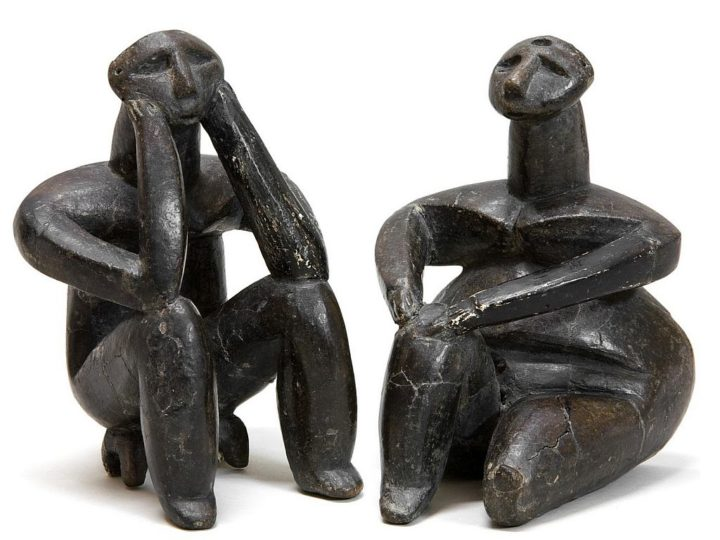
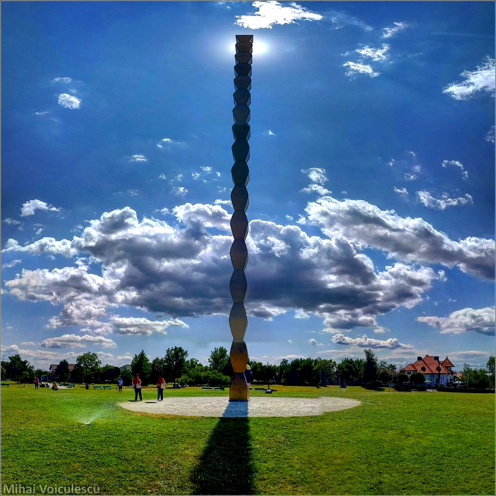
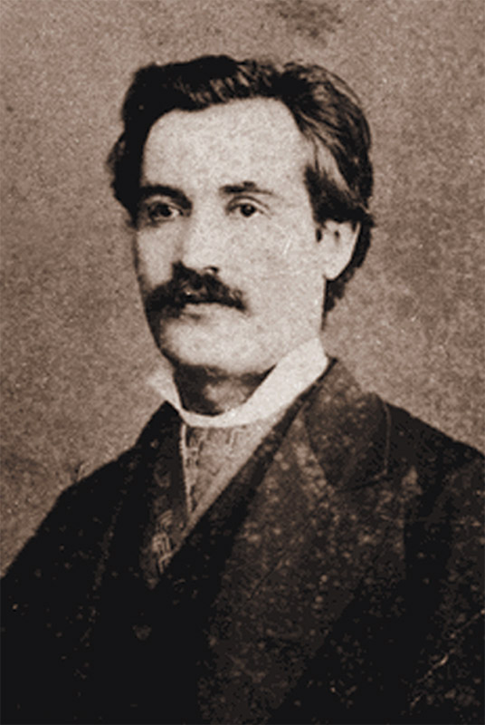

Ce este filozofia şi care este importanţa ei?
Ce este cultura?
Ce este limba?
Aceste întrebări sunt foarte grele. Nu voi avea pretenția că voi găsi răspunsul într-un articol. Voi încerca să fac o scurtă sinteză despre ce cred eu despre filozofie, cultură, artă, literatură, limbă și care e viziunea mea despre ele. Am început articolul în stilul lui Socrate: punând întrebări. Voi continua articolul în aceiași manieră și voi încerca să ofer răspunsuri.
Cuvântul Filozofie provine din greacă și înseamnă dragoste pentru înțelepciune.
De ce dragoste pentru înțelepciune? De ce ar dori cineva să fie înțelept? Pentru pragmatism. Înțelepciunea este foarte pragmatică și eficientă. A fi înțelept înseamnă să ai ordine în gânduri și idei. Filozofia îndeamnă la cugetare, la reflecție.
Filozofia îndeamnă la multe întrebări. De multe ori aceste întrebări nu au răspuns dar însăși întrebarea este un pas spre răspuns. O întrebare bine pusă dă pe jumătate răspunsul. Filozofia este foarte rațională și logică. Prin concepte, ansamble de raţionamente, se clarifică înțelegerea unui om despre anumite situații, evenimente, realitate, percepții, existență.
De ce este importantă ordinea în gânduri, idei? Ordinea grăbeşte şi eficientizează lucrurile în orice domeniu. Ordinea accelereaza evenimentele. Pentru a salva timp este necesară ordinea. Problemele sunt rezolvate mai rapid cu o gândire clară şi ordonată. Într-o problemă de viață care necesită rezolvare dacă se aplică ordine aceasta este 51% rezolvată. Filozofia oferă instrumente de ordonare şi nu numai.
La baza fiecărei schimbări în evoluția omenirii a stat schimbarea de percepție despre realitate și modul de înțelegere al fenomenelor naturale și sociale. La baza revoluției franceze de exemplu a stat schimbarea percepției despre modul de relaționare dintre oameni. Oamenii au înțeles că toți sunt egali, nu se află nimeni deasupra lor și s-au revoltat. “Libertate, Egalitate, Fraternitate sau Moarte!” este sloganul care stă la baza culturii europene. Acest slogan este piatra de temelie a culturii europene. De la revoluția franceză a început cultura europeană modernă așa cum o cunoaștem astăzi.
Orice om care își pune întrebări se poate numi filozof. Prin actul de interogare se declanșează un mecanism de procesare a informației. Problema ridicată este tratată pe toate fațetele ei. Constantin Noica şi Nae Ionescu sunt doi filozofi români renumiți pentru modul cum reuşeau să întoarcă o problemă pe toate fațetele ei. Aceștia doi observau toate aspectele ei și ofereau soluția cea mai bună.
Ce este cultura?

Oamenii au o percepție corectă despre realitate? Un om se comportă în funcție de setul de informații care i-a fost oferit. Ca o analogie un om se comportă ca un program. Un om are un input şi un output. Omul își extrage setul de informații din mediu, o integrează așa cum crede acesta și apoi se comportă ca atare. Mediul poate fi anturajul, familia, internetul, televizorul, teatrul, muzica, sportul, cărți, reviste, articole și altele. Ce constituie acest mediu pe care l-am enumerat? Cultura. Modul cum procesează această informație individul și ce face cu ea este personală și subiectivă. Modul cum se raportează un individ la diverse evenimente este subiectiv. Emoțiile, experiențele și trăirile sunt o sursă foarte mare de informație, nu doar gândurile și ideile. Filozofia nu se referă exclusiv minții. Filozofia oferă instrumente de analiză și procesare a informației. Filozofia discerne între emoții, intelect și oferă soluții raționale. Rațional nu se referă doar la intelect. Și o emoție poate fi rațională.
Percepția unui om despre realitate poate fi eronată. Unui om îi poate fi vândută o realitate falsă (un surogat) se poate minți singur sau poate percepe greșit realitatea din informații insuficiente. Principiul Hologramei din articolul anterior este un instrument foarte bun de verificare a percepției corecte asupra realității.
Filozofia încercă să găsească răspunsuri la întrebări din toate domeniile de activitate ale omului. Încearcă să afle relația omului în raport cu dansul, gimnastica, sănătatea, teatrul, pictura, muzica, religia, matematica, fizica, politica, informatica, istoria etc. Încearcă să determine structura omului și lucrează cu o anumită terminologie : minte, corp emoțional, trup, suflet, sine, ego, alter-ego, conștiință, fond, formă etc. Filozofia încearcă să răspundă la întrebări mari și existențiale ale omului. De exemplu, în filozofie am descoperit ce este dragostea: o infinitate de relaționări umane. În dragoste poți experimenta toată aria de relații : prietenie, de creație, de joacă, de familie, de muncă, de amant, de a râde împreună etc. Ura înseamnă absența oricărei relații. În această paletă largă de relații se situează și Divinitatea. Cu divinitatea poți experimenta toată această paletă largă de relații. Divinitatea dă extremele acestei arii largi de relaționări. Divinitatea se poate înfățișa și stăpân și slujitor. Iisus s-a considerat Împăratul lumii noi. În același timp acesta le-a spus apostolilor să slujească oamenii așa cum i-a slujit el.
Filozofia distinge între gând și idee. Gândul reprezintă partea pasivă de analiză a unei situații iar ideea este partea activă în care o soluție a fost găsită pentru acea situație. Ideea reprezintă inițiativa și soluția. A avea multe idei reprezintă un spirit cu multă inițiativă. A avea multe gânduri reprezintă un spirit critic. A gândi pozitiv nu înseamnă nori roz, curcubee colorate pe cer, spiriduși care se află la capătul lor cu un sac de aur, trifoi cu patru foi, inorogi și cai verzi pe pereți – acest lucru înseamnă doar naivitate nemărginită. A gândi pozitiv înseamnă a fi creativ, pragmatic și a produce multe idei bune. A gândi pozitiv înseamnă a fi activ în gândire.
Literatura stimulează foarte mult gândirea, imaginația şi capacitatea de a emite idei. Se spune că o imagine face mai mult decât o mie de cuvinte. Eu cred că o carte face mai mult decât o mie de filme.
Nu ştiu alții cum citesc dar eu când mă gândesc la mine cum o fac aș putea spune că e într-un stil foarte non-conformist, excentric, dezinhibat. De multe ori gândesc abstract, alteori încerc să vizualizez cât mai concret și exact, fac diverse conexiuni și corelări cu alte informații pe care le cunosc. Mă gândesc la cele mai nebuneşti lucruri, alteori mă păstrez în limitele normalului şi firescului. Depinde şi de dispoziția interioară, emoțională, de subiectul cărții. Am lecturat tot soiul de cărți pe cele mai diverse teme însă până la urmă am ajuns la următoare concluzie: îmi place să citesc beletristică. Pentru că aici este libertate totală, spațiu nelimitat de gândire și imaginație.
Atunci când citesc universul meu lăuntric este activ, imaginația lucrează. Reflectez şi meditez mult. Sunt atent la detalii, de multe ori dau pagina înapoi pentru a relua şi a înțelege mai bine unele aspecte. Actul citirii este un act creator. Aceasta este frumusețea lecturii: subiectivismul, solitudinea, timpul petrecut cu tine, actul creativ de imaginație. Actul citirii este un act creator la fel de important ca actul scrierii. Este libertate totală. De ce act creator? Pentru că îți poți construi în mintea ta viziuni, abordări, elemente şi detalii diferite. Desigur, legate prin coerență dar nu e mereu necesar. O carte face mai mult decât o mie de filme pentru că îmi construiesc cu ajutorul imaginației evenimentele din acea carte. Filmele îmi răpesc această posibilitate. Acțiunea dintr-o carte ar putea fi redată de către 1000 de regizori diferiți și tot nu ar avea aceiași valoare ca modul cum îmi construiesc eu acea ficțiune.
Mă pasionează cel mai mult în cărțile beletristice stilul de a reda acțiunea şi personalitățile personajelor. Nu mă interesează neapărat ca personajele să aibe o personalitate puternică sau marcantă. Într-o vreme pentru mine acest lucru constituia o atracție. Nu mai reprezintă acum neapărat o atracție. În primul rând un personaj foarte bine conturat şi definit îmi dă foarte puțină libertate mie ca cititor să lucrez asupra lui cu imaginația. Este previzibil şi predictibil. Nu pot improviza.
Un personaj viteaz ştiu bine că nu se va feri în fața pericolului şi va lupta. Un personaj frumos ştiu că va încerca să atragă atenția prin frumusețea sa. Un personaj arogant va încerca să câştige orice dispută, va încerca să îşi impună punctul de vedere şi mereu dar absolut mereu are dreptate. Contează mult misterul. Într-un articol viitor voi încerca să prezint personaje care m-au impresionat în lecturile mele: Zorba Grecul, Moromete, McMurphy, Printul Miskin și alții.
Inițial am fost atras de arta și literatura occidentală. Am descoperit că acestea sunt egoiste. Creatorul european/american este egoist. Egoismul este incompatibil cu arta. Acest tip de creator urmăreşte faima cu orice preț, popularitate, privelegii. Important este şi scopul artei. Consumatorul acestui tip de artă nu mai are nimic altceva de făcut decât să laude “creatorul” ei. Acest tip de creatori au greșit sensul adevărat și autentic artei. Arta nu este despre ei, ci despre ceilalți. Mulți găsesc în artă o modalitate de laudă. Mulți vor să arate cât de talentați sunt. E în regulă, e adevărat, sunt talentați dar nu despre asta este vorba. S-a greșit sensul. Actul de creație înseamnă împărtășire, îmbogățire de valori, sensuri, idei, vise. Când o cultură greșește sensul artei și se îndreaptă spre lauda de sine a creatorului atunci acea cultură este săracă. Arta este etică și morală. Arta adevărată își găsește un sens prin ea însăși.
Așadar, am migrat încet și ușor către cultura orientală. Am studiat și cultura budistă. Pot spune că cel mai mult m-a fascinat arta şi cultura musulmană. În cultura musulmană se poate întâlni desăvârşirea rafinamentului. Arta bizantină şi musulmană este făcută pentru ceilalți nu pentru creator. Miniaturiştii turci de exemplu nici măcar nu se semnau pe operele lor. Miniaturile şi picturile musulmane sunt abstractizate, stilizate, foarte rafinate. Arta constituie sacrificiu de sine ci nu laudă de sine. Mulți creatori de opere excepționale au murit în anonimat în cultura musulmană pentru că nu se semnau pe operele lor. Aceasta era credința lor. Se sacrificau.
Ce este limba?

În sens profund limba s-ar putea interpreta astfel: în mitul Genezei în grădina Eden, Dumnezeu i-a spus omului: “Iată toate sunt ale tale, ai grijă de ele și numește-le!”. Limba a apărut când omul a început să numească. Limba este o sumă de numiri. Limba este o sumă de conotații, sensuri date unor obiecte, emoții, trăiri, evenimente, acțiuni. Omul s-a apucat să numească orice. Omul are puterea de a numi, de a cuprinde orice percept, concept, ansamblu de idei într-un nume. Prin numire el poate crea.
La început a fost cuvântul. Cuvântul este un sunet. O frecvență, o rezonanță, o energie.
Nikola Tesla spunea în felul următor: “Pentru a putea fi capabil de a înțelege universul un om trebuie să gândească în termeni de frecvență, vibrație, energie”
Mihai Eminescu este cel care stă la baza limbii române. Mihai Eminescu a numit. El a creat o limbă de o melodicitate și sonoritate unică. El a creat o limbă de înțelesuri profunde. Acesta s-a folosit de puterea numirii și a creat. Opera lui Eminescu este temelie pentru cultura română. Existența lui Eminescu a fost un punct de cotitură în istoria României. Prin limbă Eminescu a creat o frecvență, vibrație, energie frumoasă. Eminescu a creat o rezonanță frumoasă. De aceea suntem frumoși. Datorită lui Eminescu. Românii sunt oameni frumoși. Eminescu s-a sacrificat pe sine și a creat pentru ceilalți. Limba română este atât de frumoasă încât ea este studiată de străini. De exemplu, în Polonia la Facultatea de Litere se studiază limba română.
În articolele următoare voi reda personaje care mi-au plăcut din cărțile citite
-Va urma-